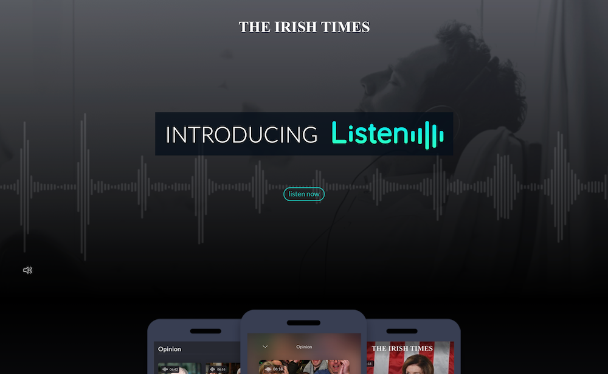

About the Projects
During my time at The Irish Times, I have been involved in a number of major projects; both for
internal technologies and customer facing solutions.
I was part of a diverse, multi-cultural team and we regularly did design workshops, user research,
and idea scoping sessions.
We were also a multi-disciplinary team, which means our duties didn't just cover UX Research and
Design, but also branding, UI Design and front-end development.
My Role
My role changed depending on the project, but since my strengths lie more towards coding and
front-end development,
I often found myself involved in projects that required good technical knowledge.
The following are some of the larger projects I was involved in:

Listen was an extensive exercise of research, implementation and branding.
It empowers the user to listen to an article rather than reading it,
as well as allowing users to scroll through all Listen articles by section.
I was involved in the entire process, from initial branding research and design, to
interface design and implementation, alongside the rest of the UX team. My single-handed
contribution was the
Listen mini website that was used
to advertise the product on launch,
which I designed and built.
The Irish Times' ePaper is an exact digital replica of the printed paper.
Available to premium subscribers, it's an exclusive way to read the newspaper as if it
was the printed version,
but without having to buy it from a stall or have it delivered. It also comes with
archive and search functions.
I was tasked with designing and implementing the ePaper mini website
that we use to advertise the product.
Re-designs
Article template re-design
Confirmation page re-design
What I Learnt
My experience with The Irish Times has been long, positive, and varied. From user research, to
re-designs and improvements, to front-end development,
to bringing both internal and customer-facing products from mere ideas to full deployment, to
mentoring interns.
Thanks to these experiences, I have aquired many soft and hard skills, especially in the areas of
teamwork, front-end development, and mentoring.
Back